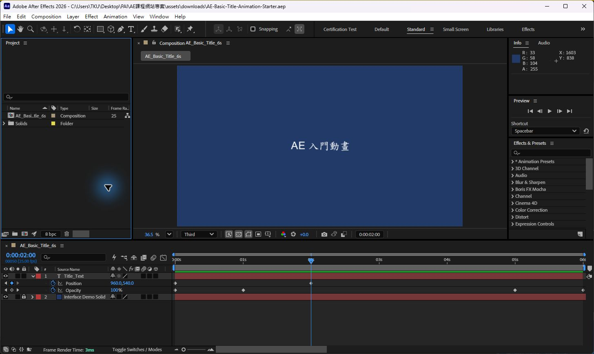
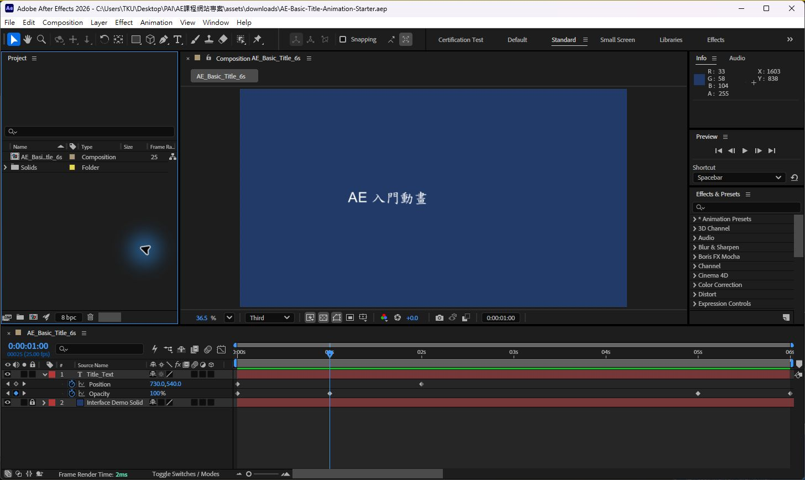

After Effects 介面與功能入門
先找到操作位置，再用短練習看見功能如何改變畫面。每個單元附上對應的截圖題號，方便從考題回到功能練習。
先認清題號與操作畫面
題庫中 Q27、Q51、Q53 的部分操作指示或參考畫面不完整；Q31 需搭配原動畫才能判讀。本講義只教相關功能，不猜缺少的畫面要求或題目答案。
AE 畫面：每個面板回答不同問題
AE 的面板可以移動、分頁或藏在其他面板後面，所以不要只記「左邊」或「下方」。先看面板名稱；找不到時用 Window 選單叫出面板，或從 Workspace 重設工作區。

快速讀圖：左側 Project 管素材與合成；中央 Composition 看目前畫面；下方 Timeline 排圖層、時間與動畫點；右側 Preview 控制播放，Effects & Presets 搜尋效果，Info 顯示顏色與座標。
| 面板 | 你在這裡做什麼 | 怎麼辨認 |
|---|---|---|
| Project | 整理匯入的影片、圖片、音訊與 Composition。 | 清單或縮圖；素材在這裡，還沒有排進時間軸。 |
| Composition | 預覽目前時間點的畫面，直接選取或移動畫面元素。 | 可見畫布與畫布外的工作區；只有畫布範圍會進入成品。 |
| Timeline | 排列圖層上下順序、起訖時間、Keyframe、Marker 與圖層開關。 | 左側是圖層與開關，右側是時間尺、圖層條與動畫點。 |
| Effect Controls | 修改目前選取圖層已套用的效果參數。 | 先選圖層再看這裡；選到不同圖層，控制內容會變。 |
| Character／Paragraph | 修改文字字型、字級、字距、描邊、對齊與段落。 | 只有文字圖層被選取或文字游標啟用時，操作才會作用到文字。 |
| Effects & Presets | 搜尋效果與動畫預設，再套用到選取圖層。 | 搜尋名稱後拖到圖層，或選取圖層後套用。 |
| Render Queue | 設定要輸出的 Composition、品質、格式與檔案位置。 | 一個輸出項目通常分開顯示 Render Settings、Output Module、Output To。 |
Composition 面板的 Magnification 是預覽縮放；Resolution（Full、Half、Third、Quarter）是預覽計算品質；Transparency Grid 用棋盤格顯示透明區。這些檢視控制不等於修改 Composition 像素尺寸或輸出格式。
第一個練習：建立會移動的標題
這個六秒練習不用外部素材，讓你看懂工程、畫布、圖層與時間如何連動。可下載 AE-Basic-Title-Animation-Starter.aep 作為範例，也可依下列設定從空白 Project 建立。
.aep。這個檔案已含藍色背景與標題，不連結外部素材；從空白工程開始也可以。AE_Basic_Title_6s 並核對 Composition Settings：1920 × 1080、25 fps、6 秒、Square Pixels。從空白工程開始時用 Composition > New Composition 建立同樣規格，再用 Layer > New > Solid 加背景。Composition 尺寸是畫布寬高，fps 是每秒影格數，Duration 是時間長度；實色背景是 Timeline 裡獨立的 Solid Layer。Title_Text；從空白工程則選 Type Tool，在畫布點一下並輸入「AE 入門動畫」。文字會成為一個 Layer。Project 裡的 Composition 是容器，Timeline 裡的 Layer 才是容器中的畫面元素。Title_Text，把 CTI 放在 0 秒，按 P 顯示 Position，按秒錶並輸入 500, 540；移到 2 秒輸入 960, 540。AE 會建立兩個位置 Keyframe，並計算中間位置。若自行建立，先選對文字圖層再輸入數值。| 時間 | Position | Opacity | 預期畫面 |
|---|---|---|---|
| 0 秒 | 500, 540 | 0% | 第一個位置 Keyframe；標題淡入前不可見。 |
| 1 秒 | 730, 540（插值） | 100% | 標題移動途中；Position 值由 AE 插算。 |
| 2 秒 | 960, 540 | 100% | 第二個位置 Keyframe；標題到中央。 |
| 5 秒 | 960, 540 | 100% | 淡出開始前，標題完整可見。 |
| 6 秒 | 960, 540 | 0% | 動畫結束，標題完全透明。 |

要把作品輸出成可播放影片，接著完成 六秒整合檢核，並依序核對 Render Settings、Output Module 與 Output To。
延伸題號：截圖 Q14、Q24、Q28、Q41、Q44 涉及畫面檢視或 Composition 設定；Q21 涉及素材影格率；Q50 涉及 Project 面板整理。
圖層：畫面位置、時間與控制關係
同一個素材可以在不同 Composition 裡形成不同 Layer。Timeline 裡較上方的 2D 圖層通常覆蓋較下方圖層；眼睛控制可見性、鎖頭避免誤選，Label 顏色幫你辨識圖層。欄位被隱藏時，從 Timeline 面板選單查看 Columns 或切換開關欄。
延伸題號：截圖 Q13、Q18、Q19、Q29、Q30、Q42、Q46、Q48、Q54、Q57；Q03 也提到 Parent & Link。
動畫：Keyframe 記錄時間點的數值
Keyframe 表示某個屬性在某個時間的值。把 CTI 移到時間點、開啟屬性秒錶並設定值，就能建立第一個 Keyframe；之後移到另一時間改值，AE 會計算中間變化。動畫速度不只受起點和終點影響，也受 Keyframe 插值方式影響。
wiggle(2,40) 的兩個值分別是每秒晃動次數與屬性數值的變化幅度。loopOut("cycle") 依已建立的 Keyframe 重複動畫；loopOutDuration("cycle",1) 以最後一個 Keyframe 往回的一秒作為循環區段。Pick Whip 也能把屬性連到其他圖層或控制項。Marker 是時間軸上的註記，可在指定時間加入並寫上說明。初學先另存副本，再試 Expression。如果題目要求保留既有 Keyframe，就不要拖動或刪除原有菱形；先記錄它們的時間和值，再加入新 Keyframe。Time-Reverse Keyframes 只反轉所選 Keyframe 的時間順序；Time-Reverse Layer 會反轉整個圖層的播放，並連同該層各屬性的 Keyframe 一起反轉。兩者都會改動時間安排；若題目要求保留原狀，先另存副本並確認要保留的是數值、原始時間點還是原工程。
延伸題號：截圖 Q03、Q10、Q11、Q15、Q16、Q20、Q26、Q27、Q31、Q38、Q43、Q49、Q51、Q52、Q55。Q10/Q49 重複；Q27、Q51 的部分參考畫面待補。
文字：先決定文字框，再改外觀與動態
Character 面板控制字型、字級、字距與 Fill/Stroke；Tracking 調整一段文字的整體字距，Kerning 調整特定字對。選取字元後可在 Character 面板設定 Superscript 或 Subscript。若要沿自訂路徑排列文字，先選文字 Layer 用 Pen Tool 畫 Mask Path，再到文字層的 Path Options 指定路徑並調整 First Margin。Source Text、文字動畫器與部分字元屬性都可設定動畫。要做可在 Premiere 改字的 MOGRT，可將 Source Text 等支援屬性加入 Essential Graphics 後輸出範本。
延伸題號：截圖 Q02、Q06、Q09、Q23、Q32、Q33、Q35、Q43、Q52、Q57。
Mask、Track Matte、效果與混合
延伸題號：截圖 Q01、Q05、Q07、Q12、Q22、Q37、Q39、Q40、Q45、Q53。Q12/Q45 重複；Q53 的形狀位置須依完整參考畫面確認。
素材與輸出：確認設定改在哪一層
匯入影像序列後，選 Project 面板中的素材並用 Interpret Footage 指定影格率；這會改變素材播放時間，不會替 Composition 設定 fps。Composition Settings 管畫布尺寸、fps 和時間長度；Render Settings 管渲染品質、解析度與時間範圍；Output Module 管檔案格式及通道；Output To 管檔名與位置。
延伸題號：截圖 Q08、Q17、Q21、Q25、Q47、Q56。Q24、Q28、Q41、Q44 的 Composition 設定請回看第 3 單元。
有些題目考的是製作判斷，不是面板操作
基本題型：先定位，再操作與驗收
題目大致分成概念判斷與操作實作；操作實作常見三種問法。下列示例為課程自編練習，不是原題翻譯或答案。
| 題型 | 題幹線索 | 解題動作 | 完成證據 |
|---|---|---|---|
| 概念判斷 | 問設定用途、影響範圍或兩個名詞差異。 | 先說明設定在哪一層生效，再排除功能相近但作用層級不同的項目。 | 能用自己的話說明結果；不需要為了回答而改專案。 |
| 介面定位 | 找素材、圖層、效果、文字格式或預覽控制。 | 先看面板名稱與目前選取對象；面板不見時從 Window 選單開啟。 | 正確面板可見，並能指出目前操作對象。 |
| 數值設定 | 題目給尺寸、fps、時間、百分比、格式或路徑。 | 先判斷是 Project、Composition、Layer、Effect、Time 還是 Render，再輸入指定值。 | 重新檢查設定欄位與單位，數值和時間均符合要求。 |
| 操作與驗收 | 題目要求建立、移動、套用、關閉、保留或輸出。 | 圈出動詞與對象，寫下要改和不能改的項目，再只執行指定操作。 | 在畫面、Timeline、設定欄或輸出檔看到可觀察結果。 |
自我練習：①放大 Composition 預覽後，輸出畫素會跟著改變嗎？不會，Magnification 只改檢視縮放。②把合成設為 1920 × 1080、25 fps、6 秒，應在哪裡核對？Composition Settings。③讓文字 0–2 秒移到中央，應看到什麼？Position 有兩個 Keyframe，中間值會變化。④最後一秒淡出改哪個屬性？Opacity；在 5 秒與 6 秒核對 100% 與 0%。
截圖題庫功能索引
題號只作為回查截圖的索引，不含題幹翻譯或答案。重複題保留原編號，方便與既有紀錄對照。
| 功能區 | 截圖題號 | 建議先練什麼 |
|---|---|---|
| Project、Composition、檢視與素材影格率 | Q14、Q21、Q24、Q28、Q41、Q44、Q50 | 切換檢視、建立與修改 Composition、Interpret Footage、整理 Project 資料夾。 |
| 圖層、Transform、Parent、Solid 與混合 | Q13、Q18、Q19、Q29、Q30、Q42、Q46、Q48、Q54、Q57 | 排序、命名、鎖定、移動、縮放、旋轉、Parent、描邊與填色。 |
| Keyframe、時間、Expression 與 Marker | Q03、Q10／Q49、Q11、Q15、Q16、Q20、Q26、Q27、Q38、Q51、Q55 | Transform 動畫、Ease、Time Remapping、Source Text、Expression、時間標記。 |
| 文字排版與 Motion Graphics | Q02、Q06、Q09、Q23、Q32、Q33、Q35、Q43、Q52 | Point／Paragraph Text、Path Options、字距、文字屬性動畫、MOGRT 與文字預設。 |
| Mask、Matte、Keying 與效果 | Q01、Q05、Q07、Q12／Q45、Q22、Q37、Q39、Q40、Q53 | 形狀與 Mask、Alpha／Luma Matte、Adjustment Layer、效果參數與遮罩範圍。 |
| 輸出與音訊 | Q08、Q17、Q25、Q47、Q56 | 輸出前檢查、Render Settings、Output Module、音訊開關與 Audio Levels。 |
| 動畫概念、前期文件與使用權利 | Q04、Q31、Q34、Q36 | 觀看完整動畫、辨認製作文件、確認素材授權與交付情境。 |
官方操作說明
軟體版本與工作區可能改變面板位置或選單名稱。操作時以功能名稱和應看到的結果核對；下列 Adobe 說明可用來查閱目前介面與細節。
- Workspaces, panels, and viewers
- After Effects composition basics、Motion Blur and Shutter Angle
- Animation basics、Control speed between keyframes、Setting and reversing keyframes、Expression language reference
- Animating text、Paragraph panel、Character panel
- Track Mattes and Traveling Mattes、Motion Graphics templates
- Import still images and image sequences、Rendering and exporting